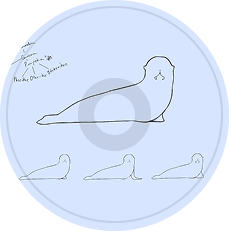
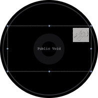

fear_of_god.txt
Fear of God is the fourth studio album by Penelope Scott released on April 24th, 2026. It's name likely derives from the idea of the 'great organ in the sky', a concept mentioned in one of the various videos... Read more
Penelope Scott is an American musician, singer-songwriter, and producer. In 2020, Scott released two compilation albums of demos, Junkyard and The Junkyard 2, followed by her debut album, Public Void. Her song "Rät" went viral shortly after its release, peaking at no. 29 on Billboard's Hot Rock & Alternative Songs Chart. Scott then released the EP Hazards in 2021, followed by two more EPs, Girl's Night and Mysteries for Rats in 2023.
Fear of God is the fourth studio album by Penelope Scott released on April 24th, 2026. It's name likely derives from the idea of the 'great organ in the sky', a concept mentioned in one of the various videos... Read more

Water Dogs is Penelope Scott's third studio album and by far the most polished of her work. It is fresh and experimental but retains Scott's signature cleverness and biting social commentary. Its first track... Read more
“Mysteries for Rats” is the fourth EP by Penelope Scott released on November 17, 2023, 2 weeks after Girl's Night. The EP was announced on September 25 alongside Girl's Night. The lead single... Read more
Penelope Scott's EP Girl's Night was released on November 3, 2023, and is one of two EPs she dropped that month, the other being Mysteries for Rats. Girl's Night carries a nostalgic tone and revisits themes and melodies from... Read more
Total streams: 351,596,360
Daily streams: 108,308
Album: Public Void
Release date: 2020-08-29
Total streams: 140,034,034
Daily streams: 44,360
Album: Public Void
Release date: 2020-08-29

Public Void is the debut studio album by Penelope Scott, released on September 25, 2020, through Tesla's Pigeon. The... Read more
1. Cigarette Ahegao
2. Lotta True Crime
3. American Healthcare (Glitzy)
4. Feel Better
5. Moonsickness
6. Dumpster
7. Rät